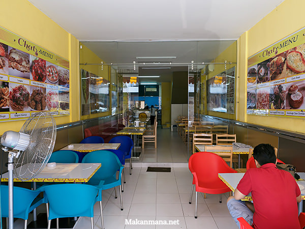

Satu ruko yang terletak di Jalan Kirana I ini memang terkesan out of place. Di sela-sela ruko yang kebanyakan merupakan showroom mobil, tampil sebuah cafe dengan warna kuning merah dan design fasad yang menyolok.

Dari satu ruko ini, terbagi 3 section. Bagian paling luar untuk smokers, kemudian sebuah pintu sliding kaca membatasi ruangan dalam yang ber-AC, dan bagian paling ujung dijadikan bar dan dapur. Sedangkan lantai 2 dijadikan baking kitchen.

Untuk sebuah ‘cafe’, effort dalam penataan ruangan dan suasana di Chat’s masih minim. Tampaknya investasi dalam usaha ini terkesan half-hearted, terlihat dari poster foto kopi dan beberapa foto menu yang diambil dari internet.
Chat’s menawarkan beberapa menu yang menurut kami menarik dan unik, diantaranya Szechuan spicy beef noodle, Vietnamese beef noodle, dan beberapa menu western lainnya seperti burger dan pizza (Sorry, no nasi goreng).
Sambil menunggu makanan dari dapur, kami pun memesan beberapa untuk dicoba, diantaranya English apple pie (7rb), Portuguese egg tarts (7rb), Hongkong egg tarts (6rb), Beef empanadas (10rb).
English apple pie (7rb).
Untuk harga ditawarkan, english apple pie disini stellar! Aroma kayu manis didalam pie terasa namun tidak overpowering rasa apel.
English chicken pie (10rb).
Take a bite, and slowly observe… Renyah kulit dibagian atas itu mulai melepuh didalam mulut, disusul aroma smokey dari isi didalamnya. Not too dry and watery either, successfully boost our appetite up.
Beef empanadas (10rb).
Kami hampir mencoba semua pastries yang tersedia siang itu, dan personal favorite goes to Portuguese egg tart dan Chicken Pies. They’re all good—I mean, if it’s your first time and have difficulty choosing, pick those two, can’t go wrong.
Szechuan spicy beef noodle (32rb).
Having lots of herbs and spices in a meal can be tricky. Kadang ada yang merasa rempahnya terlalu kuat, di sisi lain ada yang merasa bumbunya kurang intens.
Tergantung selera kamu, bisa saja mie Szechuan ini terasa pedas, tetapi kami malah justru suka, apalagi ketika chili oil itu dicampur kedalam kuah, semakin menambah intensitas rasa kuahnya.
Vietnamese Beef Noodle (32rb).
If Szechuan spicy noodle sound daring, Vietnamese noodle is a safer bet. Kami rasa daging dan mie nya sama, hanya saja permainan di kuahnya yang berbeda. Tauge mentah dan daun mint disediakan terpisah, sehingga tergantung selera anda untuk menaburnya. The broth itself is good, rich in flavor dan yang pastinya ga bikin haus afterward.
Spaghetti meatballs (30rb).
And let’s tap into western menu. Dimana lagi dapat anda temukan pasta seharga demikian (30rb) dengan 3 buah daging meatballs seukuran bola pingpong dan sourdough bread? Although not remarkable, it didn’t disappoint either. Ekspektasi kami sih pastanya Al dente but the pasta was a bit overcooked, mungkin menyesuaikan feedback pengunjung yang merasa ‘kurang masak’.
Classic Cheese Burger (28rb).
The classic cheese burger reminds us so much of McD cheese burger, except this one taste better, and healthier too. Dan pertama kalinya di Medan kami cicip roti bun yang berbeda, lebih chewy.
Neapolitan Pizza – Chicken & Pineapple (22rb).
Menu pizza disini, ga tau lagi apakah salah cetak harga menu atau memang harganya hanya 22 ribu! Neapolitan pizza di Chat berbeda dengan outlet pizza lain. Menggunakan sour dough sebagai adonannya, teksturnya crusty dibagian pinggir, namun semakin dingin pizzanya, semakin chewy dan ‘narik’.
Buffalo Chicken Wing (18rb).
Buffalo Chicken Wing, not as good as 4 fingers, but the price is a steal!
Vietnamese Drip Coffee (16rb).
Untuk minuman di Chat’s, tersedia beberapa jenis kopi dan teh. Most of them are just ordinary so we’d skip the review.
Chat’s Cafe Tarts and Pies
Jalan Kirana no 22 (Belakang Medan Plaza)
0822 7722 2072
Buka: 10.00 – 21.00
Senin libur